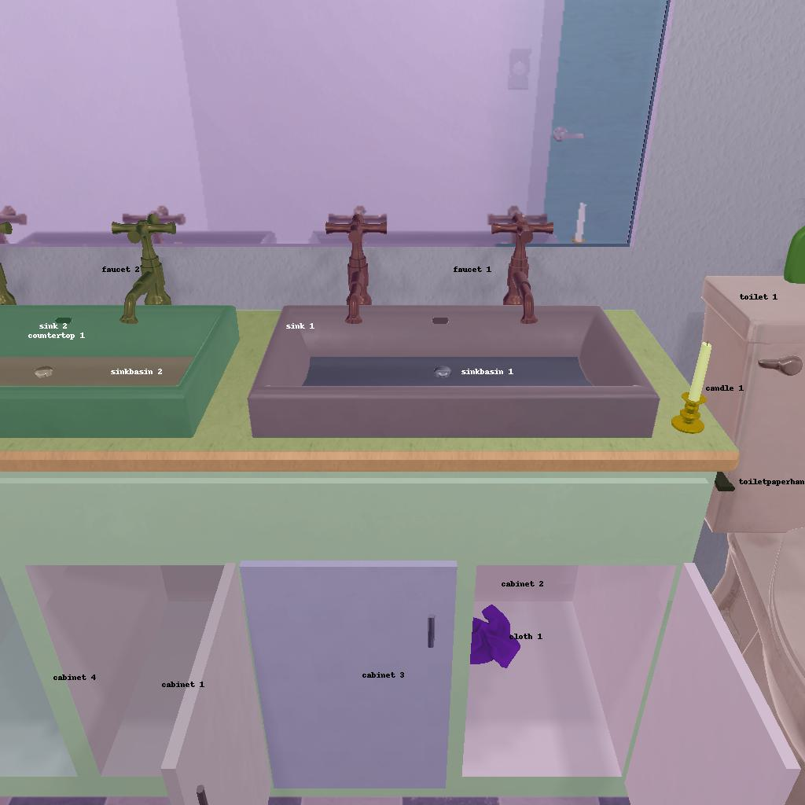

---------------------------------------------------------task: 9---------------------------------------------------------
--------------------------------------------------------------------------------------------------------------------------------------------------------------------
--------------------------------------------------------------------------------------------------------------------------------------------------------------------
Step:--------------------------------------------------------------------------9-------------------------------------------------------------------------------
----------------------------------------
VLM Prompt:
Image1:
Image2:
**Instruction**
1. Analyze the provided image to identify all visible household objects, focusing on those relevant to the task description "put some soapbottle on toilet."
2. Use the analysis of the image and the task hint "The agent must find an object of the desired type, pick it up, find the correct location to place it, and put it down there." to answer the question: what is the most reasonable action in the choices for the task description "put some soapbottle on toilet"?
4. Decide and write the answer using the template: The answer is: (i): , where i is the real number. If there is no desired object in the image, search every place based on **Initial Observation** to find the object. And if no one is exactly correct, choose a similar answer.
**Initial Observation**
You are in the middle of a room. Looking quickly around you, you can see bathtub (1), bathtubbasin (1), toilet (1), cabinet (1-4), sink (1-2), countertop (1), sinkbasin (1-2), toiletpaperhanger (1), towelholder (1), garbagecan (1), handtowelholder (1)
**Answer Choices**
(1): go to bathtub 1
(2): go to bathtubbasin 1
(3): go to toilet 1
(4): go to cabinet 2
(5): go to cabinet 3
(6): go to sink 1
(7): go to sink 2
(8): go to countertop 1
(9): go to cabinet 4
(10): go to sinkbasin 1
(11): go to sinkbasin 2
(12): go to toiletpaperhanger 1
(13): go to towelholder 1
(14): go to garbagecan 1
(15): go to handtowelholder 1
(16): open cabinet 1
(17): close cabinet 1
(18): take faucet 1 from cabinet 1
(19): take faucet 2 from cabinet 1
(20): take cloth 1 from cabinet 1
(21): take candle 1 from cabinet 1
(22): take spraybottle 1 from cabinet 1
(23): examine cabinet 1
**Answer**
Let's think step by step by following the instructions.
----------------------------------------
----------------------------------------
Original Response:
First, we need to find a soapbottle to complete the task of putting it on the toilet. By analyzing the image, we can see various objects, such as faucets, sinks, a candle, and cabinets, but there is no visible soapbottle. Based on the initial observation provided, there is no mention of a soapbottle being in sight either.
To find the soapbottle, we must search the places where it is most likely to be stored, such as cabinets or countertops. In the image, cabinet 1 is open, showing a faucet, a cloth, and a candle, but no soapbottle. Given this information, the most reasonable action to find the soapbottle is to check inside the other cabinets that are not open.
The answer is: (5): go to cabinet 3.
----------------------------------------
----------------------------------------
>>> Refine Original VLM Response and Get Pure Action: go to cabinet 3
----------------------------------------
-----------------------------------------------------------------
Running time: 35.83691191673279 seconds
Total Money: 3.9394499999999986
-----------------------------------------------------------------
-----------------------------------------------------------------
Text Observation:You arrive at loc 5. The cabinet 3 is closed.
-----------------------------------------------------------------
UNSUCCEED